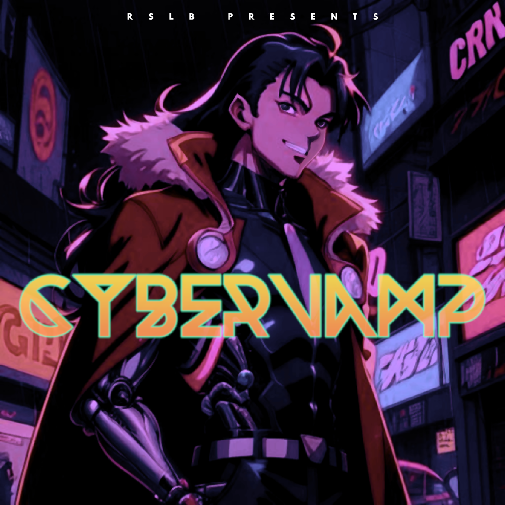

Tracklist:
1)
CITY OF ETERNAL NIGHT
2)
LAMENT FOR MINA
3)
ミーナへの哀歌 (LAMENT FOR MINA - JP VER.)
4)
DRACULA ONLINE
5)
TIME WILL COME AGAIN
6)
時が巡ってくる (TIME WILL COME AGAIN - JP CLUBMIX)
Go Back to the Main Page
Main Page